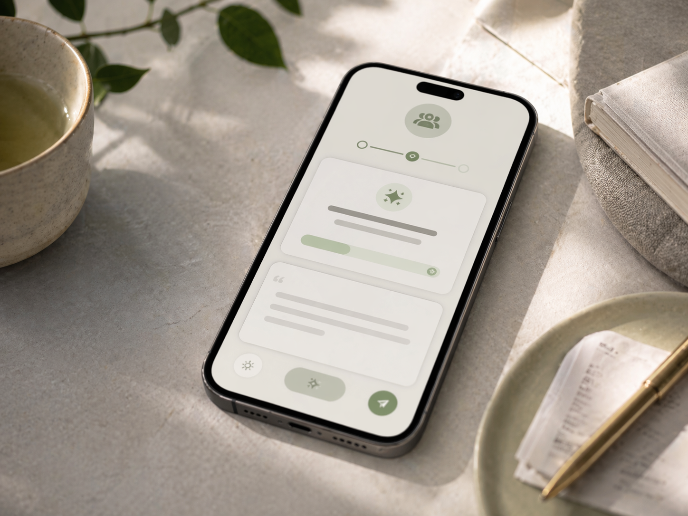

How to Know When to Ask for Money Back or Send a Repayment Update
Money rarely becomes awkward all at once.
Most of the time, the tension builds quietly in the silence between one payment and the next.
A friend says they will send it later.
A family member still has not reimbursed you.
If this happens repeatedly with parent-related bills, shared family purchases, or recurring charges, a family reimbursement tracker can keep the balance clear before the follow-up becomes awkward.
A partner knows there is an imbalance, but nobody brings it up.
Or maybe you are the one who owes money, and you keep thinking, "I should message them soon," but you are not sure when or how.
That is the part people do not talk about enough.
It is not only hard to know what to say. It is often just as hard to know when to say anything at all.
Message too early, and it can feel pushy.
Wait too long, and the situation starts to feel heavier than it should.
Stay silent, and both sides may quietly build different expectations.
That is why many money situations become emotionally uncomfortable even when the amount itself is not huge. The real problem is often not the balance alone. It is uncertainty around timing.
The real problem is not just the message
A lot of advice about money communication focuses on wording.
That matters. But timing matters just as much.
A good message sent at the wrong moment can still feel off.
A simple repayment update sent at the right moment can protect trust immediately.
A polite follow-up sent before tension builds can prevent a much bigger conversation later.
This is especially true in everyday personal situations:
- a friend who still owes you for dinner, tickets, or travel
- a partner you share recurring costs with
- a family member you regularly cover purchases for
- an informal client or side-work balance
- a repayment that was promised "next week" and then quietly drifted
In all of these cases, people usually do not want to sound cold, formal, or demanding. They want to stay clear without damaging the relationship.
That is exactly where timing becomes difficult.
Why people delay money messages
Most people do not avoid money messages because they do not care.
They avoid them because they are trying to protect the relationship.
You might delay a follow-up because:
- you do not want to seem petty
- you worry the other person is under pressure
- you are not sure whether enough time has passed
- you do not want to send a message that feels repetitive
- you are hoping they will bring it up first
You might delay a repayment update because:
- you feel embarrassed
- you do not have the full amount yet
- you do not know whether to explain more or keep it short
- you are afraid the message will sound like an excuse
- you keep thinking you will send it tomorrow
The longer that delay continues, the more mental weight the message tends to gain.
A small check-in turns into something that feels much bigger than it really is.
That is why the right system is not only one that tracks the balance. It is one that also reduces the guesswork around communication.
So when is the right time to reach out?
There is no perfect universal rule.
The right time depends on context.
A useful money check-in often depends on things like:
- how long it has been since the last activity
- whether there has been real repayment progress
- whether a repayment date was promised
- whether that promised date is approaching or already overdue
- whether you already sent a similar message recently
- whether you already set a reminder
- whether the balance is unusually large for that relationship
- whether the balance recently changed direction
- whether the other person already received a summary, export, or live balance link
- whether the situation is starting to drift into silence
That is why simple timers are not enough.
A reminder like "follow up after 7 days" can help a little, but it still misses the real question: does communication actually matter right now?
Sometimes seven days is too soon.
Sometimes it is already too late.
Sometimes the better move is not a follow-up at all, but a repayment update from your side.
The two moments that matter most
In real life, awkward money situations usually fall into two communication moments.
1. Follow-Up
This is when someone owes you, and the silence is becoming risky.
Maybe there was a promise. Maybe there was partial repayment, but no real progress since then. Maybe the balance is still open, and it has been just long enough that continuing not to mention it feels worse than saying something.
A good follow-up is not about pressure for the sake of pressure.
It is about preventing confusion, reducing resentment, and keeping the balance visible before both sides start carrying different versions of the story.
2. Repayment Update
This is when you owe someone, and clarity matters before they have to ask.
This is one of the most underrated money messages.
A repayment update says, in effect:
- "I have not forgotten."
- "I know this matters."
- "I want to keep expectations clear."
Even when you cannot fully repay yet, a simple update can preserve trust far better than silence.
That is why repayment updates are often just as important as follow-ups. They keep the relationship from slipping into uncertainty.
Why "what to say" and "when to say it" should work together
These two problems are deeply connected.
If you do not know whether now is the right time, you hesitate to message.
If you do not know how to phrase it, you hesitate even more.
That is why solving only one half of the problem is not enough.
A good money system should help with both:
- when to reach out
- what to say when you do
At YouOweMe, this is the idea behind Smart Money Check-Ins.
Instead of only helping you draft a message after you already decided to send one, the app can also help detect when communication is beginning to matter.
It looks at the real context around a borrower or person, including balance history, repayment progress, promised dates, reminders, stretches of silence, and other signals that suggest timing is starting to matter. Then it can suggest the right next step and guide you into a ready-to-send money message that fits the situation.
In other words, it helps solve the full problem: not just the wording, but the timing too.
Once the timing is clear, use the repayment reminder text examples to choose wording that fits the situation.

If the hardest part for you is usually phrasing, you may also want to read how to handle awkward money conversations.
What makes a smarter check-in different from a basic reminder
A basic reminder simply fires because a date exists.
A smarter check-in asks whether surfacing a message now would actually be useful.
That distinction matters.
A good proactive money suggestion should not keep nagging you for no reason. It should avoid surfacing when:
- you already have a matching reminder due soon
- you recently sent the same kind of message
- a recent share or export already made the context clear
- an active live balance link makes another message unnecessary
- the moment is too weak to justify an interruption
And when it does surface, it should not just say "send now."
It should also help explain:
- why now
- how strongly the situation matters
- what kind of tone fits the moment
- whether the timing feels immediate or better a little later
- what kind of message is appropriate
That is a very different experience from getting a random nudge with no context.
Why this helps protect relationships
People often think money tools are mainly about numbers.
But in real life, the emotional side matters just as much.
A good check-in can help you:
- reduce tension before it grows
- avoid passive resentment
- avoid making the other person guess what you expect
- show responsibility when you are the one repaying
- keep everyday money from becoming relationship friction
That is especially important for friends, couples, and families, where the goal is rarely to "win" the exchange.
The goal is to stay clear and respectful.
What this looks like in real life
Here are a few common examples.
A friend owes you after travel
You paid for tickets and a hotel, and they said they would send their part later. A week passes. Then another. No new activity. No repayment. No message.
The hard part is not knowing the amount. The hard part is deciding when following up stops feeling rude and starts feeling necessary.
You owe someone and cannot repay fully yet
You borrowed money, intended to repay faster, and now it is taking longer than expected. You do not want to disappear, but you also do not know how to explain it without sounding defensive.
A repayment update here is often the healthiest next move.
Ongoing family reimbursements
You regularly pay for subscriptions, household costs, or practical purchases for parents or relatives. Nobody is fighting. But over time, the details blur, and the silence makes it harder to bring up.
This is exactly where consistent timing and clear records help, especially when parent-related bills, recurring charges, partial repayments, and family summaries keep coming back.
Shared expenses that slowly became a balance
What started as casual back-and-forth spending now has one side covering more than the other. Nobody intended to keep score, but the imbalance is real.
That is often a good fit for a clearer shared-expense system, especially if the situation is recurring. See our shared expense tracker and expense tracker for couples pages if that sounds familiar.
Roommate balances can become awkward when rent, utilities, groceries, or household supplies are repaid late. For that use case, see the roommate expense tracker.
What to do if you are unsure whether to message now
If you are on the fence, ask yourself:
- Has enough time passed that continued silence is less helpful than a calm message?
- Was there a promised repayment date?
- Has there been any real progress since the last check-in?
- Would the other person benefit from clearer expectations?
- Am I avoiding the message because the moment is wrong, or because I am uncomfortable?
- If I wait longer, is this likely to feel lighter or heavier?
If waiting is only making the situation more mentally crowded, that is usually a sign that clarity would help.
Not a harsh message.
Not an aggressive message.
Just a clear one.
The better goal: earlier, calmer, clearer communication
The best money conversations usually do not start when things are already breaking down.
They start a little earlier.
Not too early.
Not too late.
Just early enough that clarity still feels normal.
That is the real value of proactive money messages.
They help you act before awkwardness turns into tension, and before tension turns into conflict.
And when timing is paired with an actual ready-to-send message based on the real situation, the whole thing becomes much easier to act on.
You are no longer staring at a balance wondering:
"Should I say something?"
or
"What exactly do I even write?"
You have context.
You have timing.
You have a draft that fits the moment.
A better way to handle money between people
If you keep dealing with personal IOUs, delayed repayments, repayment updates, family reimbursements, or shared expenses that become awkward to talk about, YouOweMe is built for exactly that kind of real-life money situation.
You can use it to keep the balance clear, track repayments and reminders, and generate money messages based on the actual situation rather than generic templates.
And with Smart Money Check-Ins, the app can also help with the moment before the message: knowing when communication actually matters.
You may also want to explore:
- App to track money owed
- How to ask someone to pay you back without being rude
- How to handle awkward money conversations
- Split Expense Calculator for one-time shared bills where you need to see who owes whom first
- Repayment reminder text examples for wording once the timing is clear
- Roommate expense tracker for rent, utilities, groceries, and delayed roommate settle-ups
- Browse all solutions
Because with money between people, the hardest part is often not the math.
It is knowing when to reach out, and how to do it in a way that keeps the relationship intact.
Published · Updated